HTML (HyperText Markup Language) - це мова розмітки гіпертексту, призначена для створення веб-сторінок. Під гіпертекстом у цьому випадку розуміється текст, пов'язаний з іншими текстами за допомогою вказівників-посилань.
HTML є досить простим набором кодів, які описують структуру документа. HTML дозволяє виділяти в тексті окремі логічні частини (заголовки, абзаци, списки та ін.), розміщувати на веб-сторінці підготовлене фото чи малюнок, організовувати на сторінці посилання для зв'язку з іншими документами.
HTML не визначає конкретні і точні атрибути форматування документа. Кінцевий вигляд документа остаточно визначає лише програма-браузер на комп'ютері користувача Інтернету. HTML також не є мовою програмування, але веб-сторінки можуть містити вбудовані програми-скрипти на мовах Javascript і Visual Basic Script, а також програми-аплети на мові Java.
Навіть якщо ви не плануєте подальше редагування HTML "вручну" (припускаючи використання графічних редакторів), знання мови HTML дозволить вам краще використовувати ці засоби і збільшить ваші шанси зробити HTML-документ більш доступним і "читабельним" при перегляді різними браузерами.
Припустимо, що у нас є гіпотетичний атрибут форматування тексту, керований кодом <X>, і ми хочемо застосувати його до слів "Це мій текст". HTML-послідовність кодів і самого тексту буде виглядати так:
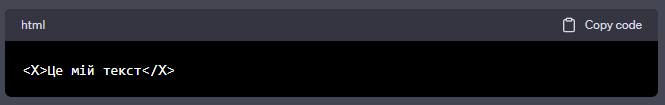Теги можуть вкладатися один в одного ієрархічно, але без перетинів, тобто допустимо вкладення виду <teg1><eg2></teg2></teg1>, але не <<teg1><teg2></teg1></teg2>. Дія вкладених тегів об'єднується. Наприклад, якщо всередині тега, що створює жирний курсив, вкладений тег курсиву, то в результаті отримається жирний курсив.
к тегам я бы добавил
Тег <blockquote> в мові HTML використовується для виділення цитованого тексту, вказуючи, що це цитата або витяг з іншого джерела.
В HTML існують два основних типи списків: ненумеровані (без номерів або маркерів) і нумеровані (з номерами або маркерами). Також існує третій тип - описовий список. Вот приклади для кожного типу:
Результат:
Результат:
Результат:
Кожен пункт списку визначається тегами <li> (для ненумерованих і нумерованих списків) або тегами <dt> і <dd> (для описового списку). У кожному з цих тегів може бути вкладений інший HTML-код.
Тег <meta> з атрибутом name="viewport" використовується в HTML для налаштування параметрів відображення веб-сторінки на різних пристроях і браузерах. Основний варіант використання цього тегу - визначення параметрів масштабування та розміру екрану.
Наприклад, встановлення ширини екрану рівною ширині пристрою і масштабування:
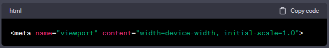Розшифровка атрибутів:
Такі параметри допомагають забезпечити адаптивність веб-сторінки для різних пристроїв і уникнути автоматичного масштабування, що допомагає покращити користувацький досвід на мобільних пристроях.
В контексті веб-розробки розрізняють абсолютні та відносні шляхи. Це використовується для вказання місцезнаходження файлів чи ресурсів на веб-сервері чи в файловій системі. Давайте розглянемо відмінності між ними:
Абсолютний шлях вказує повний шлях від кореневого каталогу. У веб-розробці абсолютні шляхи можуть виглядати, наприклад, так:
Абсолютні шляхи вказують точне розташування файлу чи ресурсу відносно кореневого каталогу сервера чи файлової системи.
Відносний шлях вказує шлях відносно поточного робочого каталогу чи місця, в якому ви вже знаходитесь. Відносні шляхи можуть бути вказані відносно поточного URL або каталогу.
Відносні шляхи не розпочинаються з кореневого каталогу чи URL і вказують на місце відносно поточного робочого каталогу чи URL.
Приклад використання в HTML:
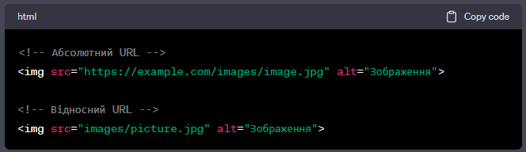У веб-розробці відносні шляхи часто використовуються для локальних ресурсів на веб-сайті, тоді як абсолютні шляхи можуть бути необхідними для вказання ресурсів за межами поточного веб-сайту чи сервера.
В HTML також важливо дотримуватися визначених стандартів форматування для покращення читабельності вашого коду. Ось кілька загальних порад:
Використовуйте відступи для вирівнювання вкладених елементів. Зазвичай, рекомендується використовувати пробіли або табуляцію.
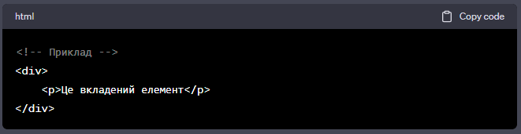Використовуйте пусті рядки для розділення блоків коду та зроблення його більш структурованим.
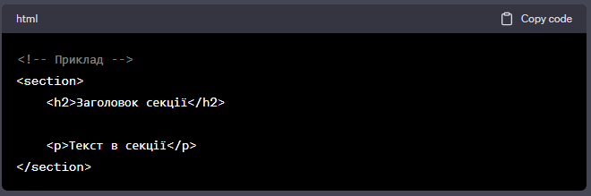Використовуйте подвійні лапки для атрибутів, а не одинарні, і старайтеся використовувати один стиль (одинарні чи подвійні лапки).
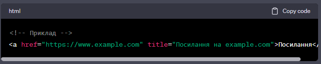Вирівнюйте атрибути для полегшення читання, особливо коли вони займають кілька рядків.
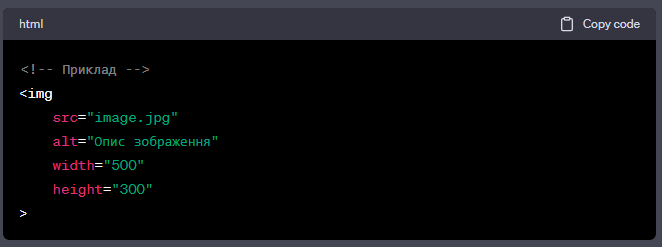Хоча HTML не чутливий до регістру, рекомендується використовувати нижній регістр для тегів та атрибутів для єдності стилю.
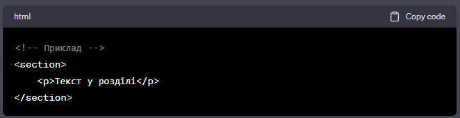Ці поради можуть бути адаптовані в залежності від конкретних вимог вашого проекту чи команди. Важливо дотримуватися консистентності і обирати стиль, який підходить для вашого проекту.
Теги, які ви перерахували, вводять структурну семантику в HTML і допомагають визначати різні частини веб-сторінки. Вони допомагають в розумінні та інтерпретації змісту веб-сторінки як людьми, так і пошуковими системами. Давайте коротко розглянемо кожен з них:
Вказує на введення або навігаційну частину сторінки. Зазвичай містить заголовки, логотип, навігацію або інші елементи, які входять до верхньої частини сторінки.
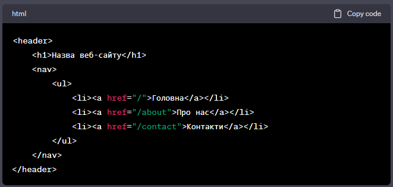Вказує на основний вміст сторінки, який не повинен містити навігаційних елементів або заголовків. Зазвичай використовується лише один раз на сторінці.
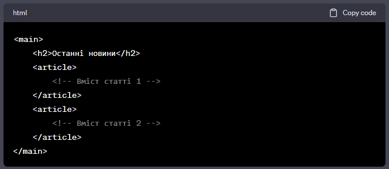Вказує на контент, який стоїть окремо від основного вмісту і може містити бічні панелі, рекламу, пошукові форми чи інші елементи.
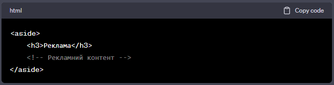Визначає блок з навігаційними посиланнями. Зазвичай містить список або інші елементи для навігації.
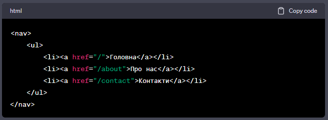Визначає розділ або тематичну групу контенту на сторінці. Зазвичай містить заголовок.
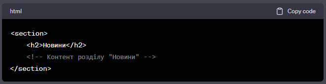Вказує на незалежну, самостійну статтю, яка може бути використана окремо від інших частин веб-сторінки.
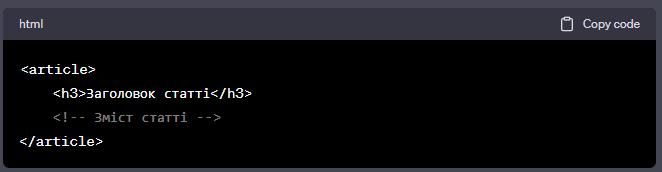Ці теги-орієнтири допомагають в створенні структурно зручного і семантично правильного HTML-коду, що полегшує розуміння структури веб-сторінки.
Для стилізації тексту в HTML використовуються вбудовані стилі, які визначаються за допомогою атрибутів HTML-тегів або за допомогою властивостей стилів в тегах <style> або в зовнішніх CSS-файлах. Нижче наведені деякі приклади:
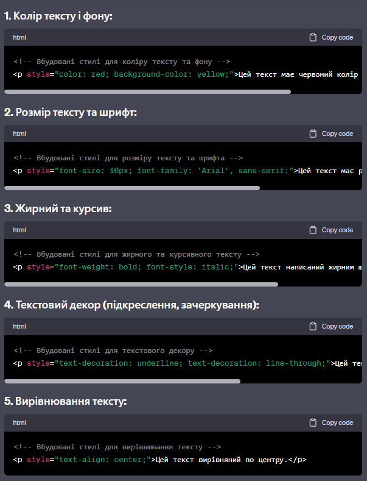font-size - це властивість стилів CSS, яка визначає розмір шрифту для тексту. Ця властивість може приймати різні значення, такі як абсолютні одиниці вимірювання, відсотки або ключові слова.
Ось декілька прикладів використання font-size:
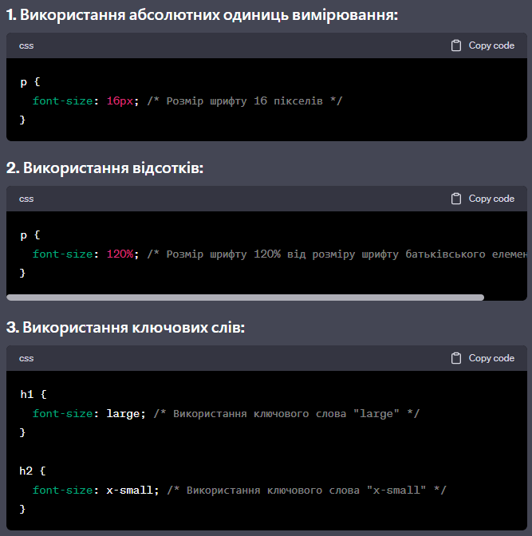p { font-size: 1.2em; /* Розмір шрифту 1.2 рази від розміру шрифту батьківського елемента */ }
div { font-size: 0.8rem; /* Розмір шрифту 0.8 рема (задано відносно кореневого елемента) */ }
Важливо пам'ятати, що значення font-size встановлює розмір шрифту для тексту всередині елемента і може успадковуватися від батьківського елемента.
Ці стилі можна також комбінувати, додаючи їх до одного елементу. Однак важливо враховувати, що використання вбудованих стилів для всіх елементів у HTML-коді може призвести до ускладнення обслуговування та утруднення редагування стилів в майбутньому. У реальних проектах краще використовувати зовнішні CSS-файли для визначення стилів і розділити структуру HTML та стилі для полегшення управління кодом.
CSS toggle switch
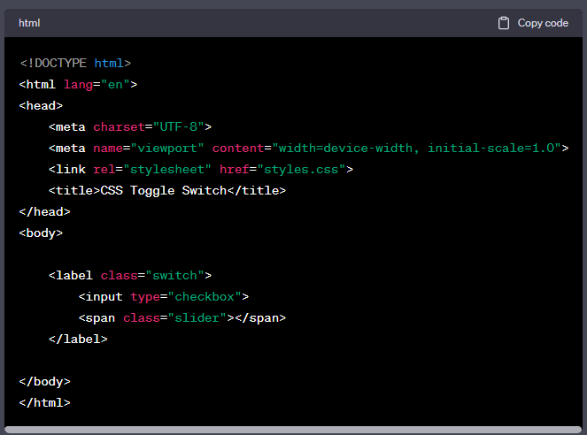